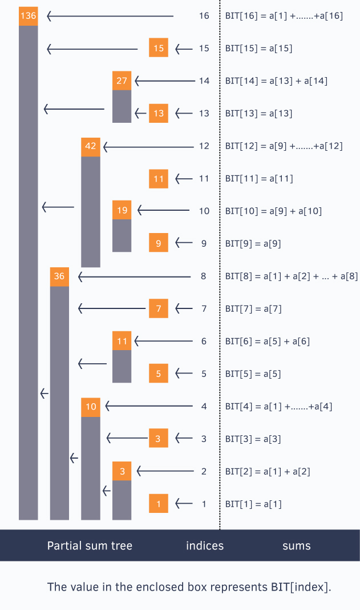

Binary Index Tree
Binary Index Tree
Binary Indexed Tree also called Fenwick Tree provides a way to represent an array of numbers in an array, allowing prefix sums to be calculated efficiently. For example, an array [2, 3, -1, 0, 6] is given, then the prefix sum of first 3 elements [2, 3, -1] is 2 + 3 + -1 = 4. Calculating prefix sum efficiently is useful in various scenarios. Let’s start with a simple problem.
Problem:
Description of GCD Sum
Function F is defined as,
F(x) = GCD(1,x) + GCD(2,x) + ... + GCD(x,x)
where GCD is the Greatest Common Divisor.
Given an array A of size N, there are 2 types of queries:
1. C X Y : Compute the value of (F(A[X]) + F(A[X+1]) + F(A[X+2]) + ... + F(A[Y])) (mod(10^9 + 7))
2. U X Y: Update the element of array A[X] = Y
Input:
First line of input contains integer N, size of the array.
Next line contains N space separated integers the elements of A.
Next line contains integer Q, number of queries.
Next Q lines contains one of the two queries.
Output:
For each of the first type of query, output the required sum mod(10^9 + 7).
Constraints:
1<=N<=10^6
1<=Q<=10^5
1<=A[i]<=5*10^5
For update,
1<=X<=N
1<=Y<5*10^5
For compute,
1<=X<=Y<=N
SAMPLE INTPU:
3
3 4 3
6
C 1 2
C 1 3
C 3 3
U 1 4
C 1 3
C 1 2
SAMPLE OUTPUT:
13
18
5
21
16
Binarty Index Tree Layout
//for ease, we make sure our given array is 1-based indexed
int a[] = {0, 1, 2, 3, 4, 5, 6, 7, 8, 9, 10, 11, 12, 13, 14, 15, 16};

Code Implementation
Main
1
2
3
4
5
6
7
8
9
10
11
12
13
14
15
16
17
18
19
20
21
22
23
24
25
26
27
28
29
30
31
32
33
34
35
36
37
38
39
40
41
42
43
44
45
46
47
48
49
50
51
52
53
54
55
56
57
58
59
60
61
62
63
64
65
66
67
68
69
70
71
72
73#include <stdio.h>
#include <stdint.h>
#define V_MAX (500000 + 1)
#define MOD_BASE (1000000000 + 7)
//#define DBG(f_, ...) do { printf((f_), ##__VA_ARGS__); } while(0)
#define DBG(f_, ...)
int main()
{
int *arr;
long long *BIT;
int i, size, opts, value;
long long phi[V_MAX], sums[V_MAX];
char opt;
int x, y;
scanf("%d\n", &size);
arr = malloc(sizeof(int) * (size + 1));
if (!arr) {
return 0;
}
BIT = malloc(sizeof(long long) * (size + 1));
if (!BIT) {
free(arr);
return 0;
}
memset(arr, 0, sizeof(int) * (size + 1));
memset(BIT, 0, sizeof(int) * (size + 1));
memset(phi, 0, sizeof(phi));
memset(sums, 0, sizeof(sums));
SumOfGCDs(sums, phi, V_MAX);
DBG("Array size %d\n", size);
i = 0;
while ((++i) <= size && (scanf("%d", &value) != EOF)) {
if (value >= V_MAX) {
continue;
}
arr[i] = sums[value];
Update(BIT, i, arr[i], size);
DBG("arr[%d] = %d, gcdsum=%d\n", i, value, arr[i]);
}
scanf("%d\n", &opts);
DBG("Options %d\n", opts);
i = 0;
while ((++i) <= opts && (scanf("%c %d %d\n", &opt, &x, &y) != EOF)) {
int nValue;
DBG("Opt: %c %d %d\n", opt, x, y);
switch (opt) {
case 'C':
printf("%d\n", (Query(BIT, y) - Query(BIT, x - 1)) % MOD_BASE);
break;
case 'U':
nValue = sums[y];
Update(BIT, x, -arr[x], size);
Update(BIT, x, nValue, size);
arr[x] = nValue;
break;
}
}
free(arr);
free(BIT);
return 0;
}Construct&Update
1
2
3
4
5
6void Update(long long *BIT, int idx, long long diff, int n)
{
for (; idx <= n; idx += (idx & (-idx))) {
BIT[idx] += diff;
}
}Query
1
2
3
4
5
6
7
8
9
10long long Query(long long *BIT, int idx)
{
long long sum = 0;
for (; idx > 0; idx -= (idx & (-idx))) {
sum += BIT[idx];
}
return sum;
}Euler’s Totient function
1
2
3
4
5
6
7
8
9
10
11
12
13
14
15
16
17
18
19
20
21
22
23
24
25
26
27
28
29
30
31
32
33
34
35
36// Precomputation of phi[] numbers. Refer below link
// for details : https://goo.gl/LUqdtY
void ComputeTotient(long long *phi, int size)
{
int i, j;
// Refer https://goo.gl/LUqdtY
phi[1] = 1;
for (i = 2; i < size; i++) {
if (!phi[i]) {
phi[i] = i - 1;
for (j = (i << 1); j < size; j += i) {
if (!phi[j])
phi[j] = j;
phi[j] = (phi[j]/i) * (i - 1);
}
}
}
}
void SumOfGCDs(long long *sums, long long *phi, int size)
{
int i, j, k;
ComputeTotient(phi, size);
for (i = 1; i < size; i++) {
// Iterate throght all the divisors
// of i.
for (j = i, k = 1; j < size; j += i, k++) {
sums[j] += (i*phi[k]);
}
}
}Cautions
– sum overflow, so with long long
– index 0 is ommited of BIT array